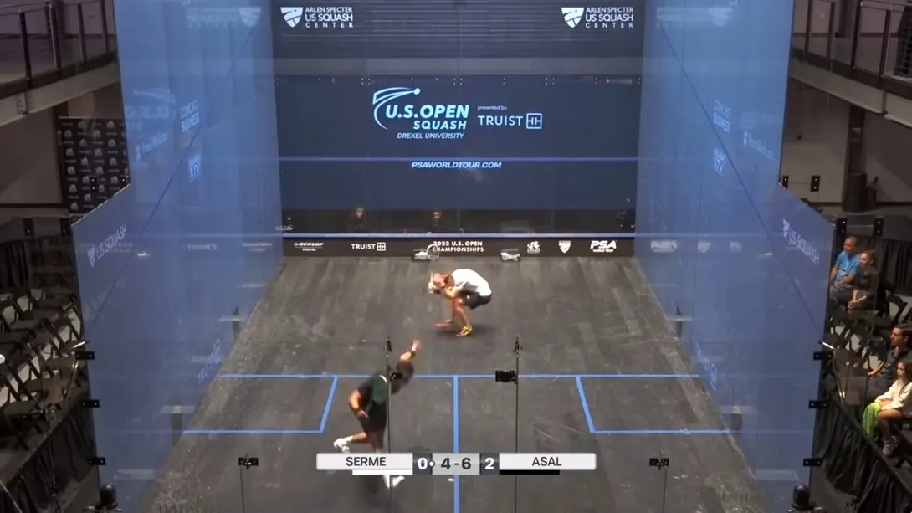

What is Turning in Squash?
This article has been prompted by a recent incident in the professional squash tour. It’s aimed at beginners, new players and club players and will only briefly discuss the incident.
Let’s start by looking at the incident in question. Warning: it shows one player being hit with the ball. If you prefer not to watch, the image below the twitter embed shows the moment before the player is hit.
This turning incident is generating a lot of passionate discussion (arguments) within the squash community. pic.twitter.com/fM8TN0dJTg
— Phillip Marlowe: BetterSquash (@bettersquash) October 12, 2022
The Moment Before The Impact
What Is Turning?
There is a little confusion regarding this rule and that’s mostly because of its name. Essentially, “turning” is when the ball passes one side of the body and comes back around the other side. And here is the part that many people don’t know: The player doesn’t have to turn their body for it to be considered “Turning”. It’s a small distinction, but an important one.
It’s important because if the player physically turns or spins, they lose sight of their opponent. The history and development of the rule aren’t important here, but as with some other rules, the turning rule can’t just be viewed in isolation, other aspects must be considered. That’s one other reason for the confusion.
Safety First
If turning happens, in general, a let would be played. For many situations, this seems unfair to the striker because they feel they should have won the point. The fact that unless the non-striker hinders the swing of the striker only a let is played, has in my opinion, caused some players to hit the ball hoping to win the point, rather than stopping.
Let me be very clear: I advise you to stop every single time turning occurs.
Yes, there will be times that you should have won the point as the striker, but it’s better to be safe than to hit the player and potentially cause an injury. This should be one of the first things a new player learns: Safety first!
When Does It Happen Most?
It’s my experience that this happens most with serves and service returns, but not only then. A player decides to leave a serve instead of volleying it and then has to turn after the ball hits the back wall, that’s the point they should stop, play a let and stay safe. It can be frustrating for both players because the server feels they hit a good serve and the returner feels they could have hit either a good shot or even a winner, but nothing is more important than safety.
Why Is It Different For Advanced Players?
While the rules are the same same for everybody, the court awareness of advanced players is greater (in general) than lower levels. As is the ability to play more shots from the same situation. Another difference is that at lower levels, it’s more common for players to attempt to hit the ball, miss and then turn to try again. Having two attempts at hitting the ball is covered in the rules and does change things, but I still recommend stopping and replaying the point.
The Actual Turning Rule
Here is the exact wording from the current rules, but as I have already mentioned, other rules will apply too, most notably rule 9 regarding a player being hit with the ball, which mentions turning.
8.13 Turning
Turning is the action of the player who strikes, or is in a position to strike, the ball to the right of the body after the ball has passed behind it to the left or vice versa, whether the player physically turns or not.
If the striker encounters interference while turning, and could have made a good return, then:
8.13.1 if the swing was prevented, even though the opponent was making every effort to avoid the interference, a stroke is awarded to the striker;
8.13.2 if the non-striker had no time to avoid the interference, a let is allowed;
8.13.3 if the striker could have struck the ball without turning, but turned in order to create an opportunity to request a let, no let is allowed.
8.13.4 When the striker turns, the Referee must always consider whether the action was dangerous and rule accordingly.
Yes, I know rule 8.13.3 says that if the player turned on purpose just to get a let, then no let is given, but as I said, just play a let and be safe. if you don’t then the next time the striker will hit the ball and that could be dangerous.
Final Thoughts
Squash is no more dangerous than most sports, but the fact that players share the same space means more care must be taken to avoid dangerous situations. I don’t care how important the match is, what the score is or the feelings between the players: SAFETY MUST COME FIRST.
As a squash player, please put your opponent’s safety above the desire to win a single point.
Continue Reading
• Previous: Straight Only, Any Length Condition Game Training
• Next: Do I Have To “Keep My Racket Up” When Playing Squash?
• Random: Take A Chance!
• Popular: Here Are 3 Crosscourt Shots Every Club Squash Player Should Know